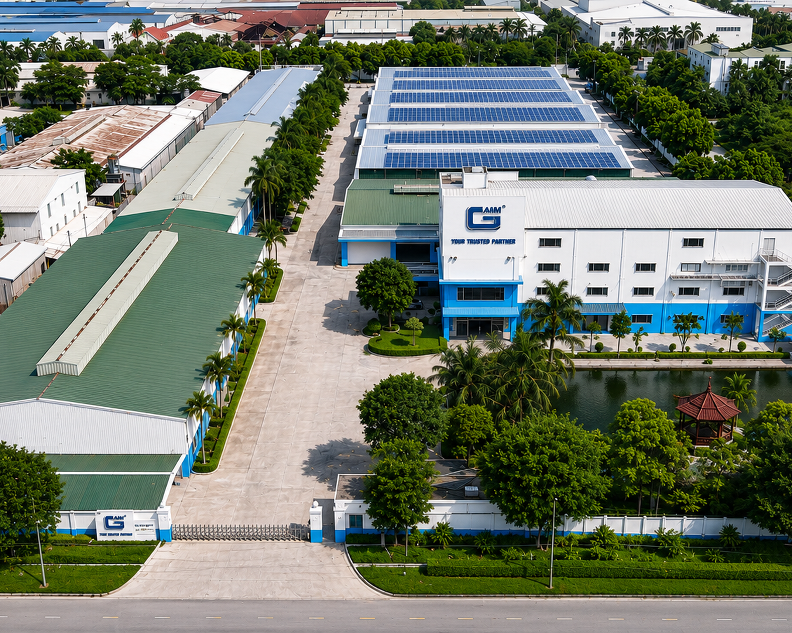
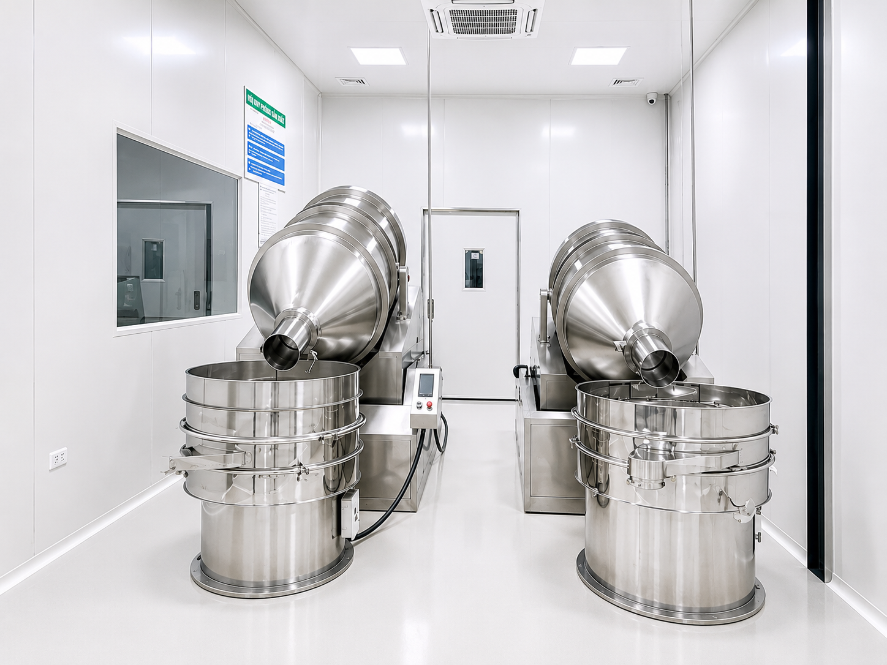
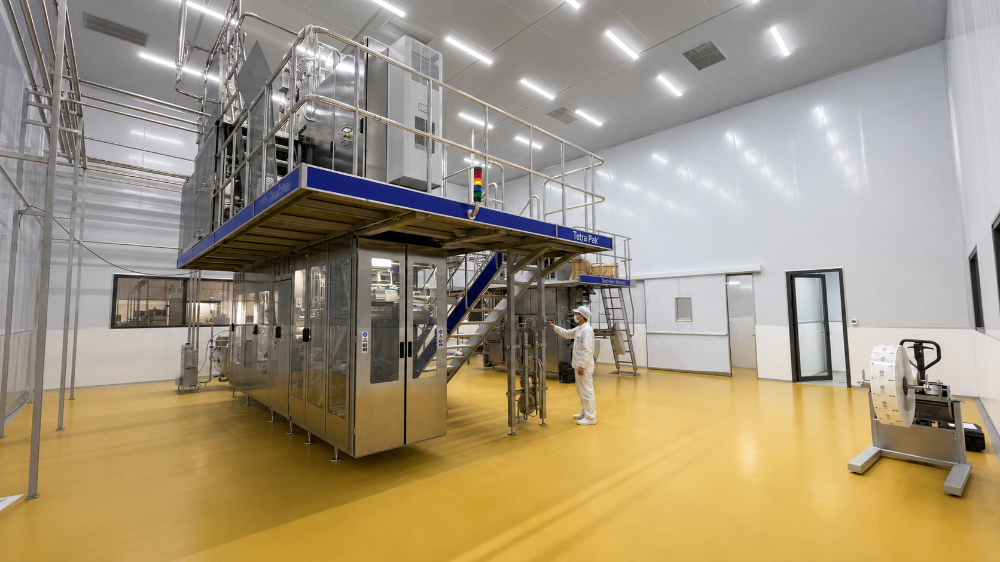
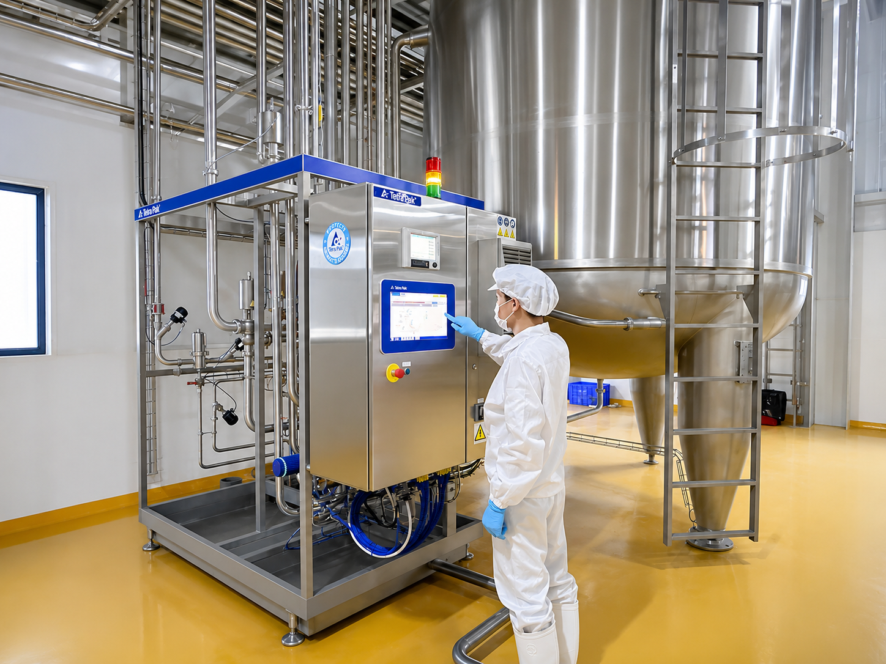
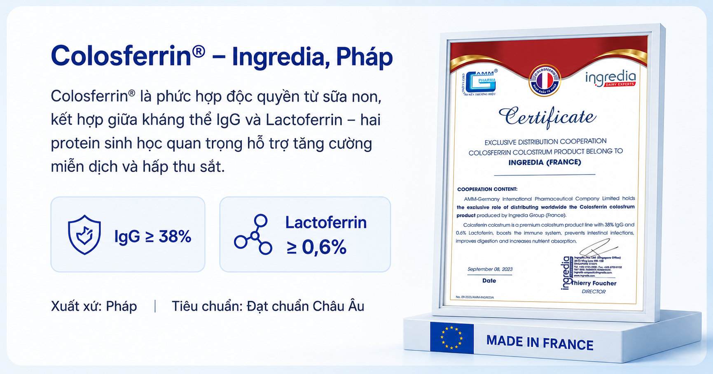
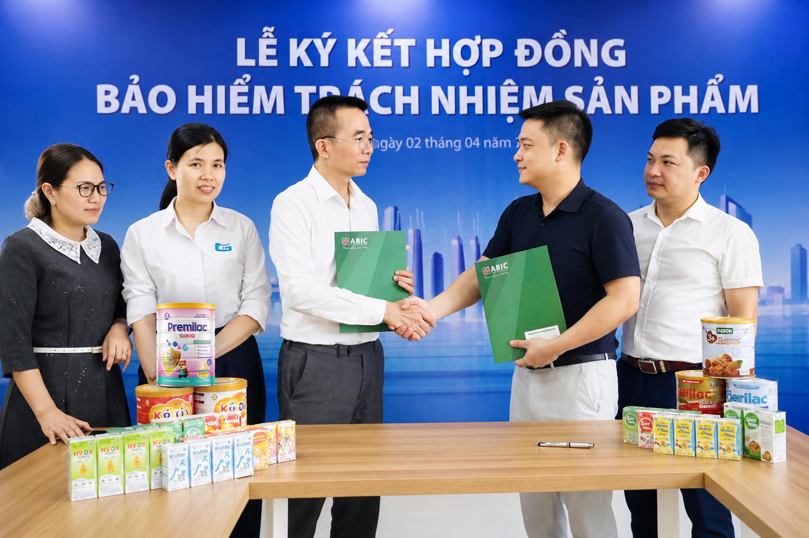

✦
Khoa học dinh dưỡng
Nghiên cứu nhu cầu thực tế, phát triển công thức và xây dựng giải pháp phù hợp với từng nhóm đối tượng.
AMM nghiên cứu, sản xuất và đồng hành cùng các đối tác trong hành trình phát triển những sản phẩm dinh dưỡng chất lượng, ứng dụng công nghệ hiện đại.
AMM – Germany Nutrition là đơn vị nghiên cứu, sản xuất và cung cấp các giải pháp dinh dưỡng khoa học ứng dụng công nghệ hiện đại.
Từ định hướng sản phẩm, nghiên cứu công thức, lựa chọn nguyên liệu đến sản xuất và kiểm soát chất lượng, AMM đồng hành cùng đối tác trong toàn bộ hành trình phát triển sản phẩm.

Nghiên cứu nhu cầu thực tế, phát triển công thức và xây dựng giải pháp phù hợp với từng nhóm đối tượng.
Ứng dụng hệ thống thiết bị và dây chuyền sản xuất hiện đại cho sữa bột, sữa nước và sản phẩm dinh dưỡng.
Đồng hành cùng đối tác từ ý tưởng, phát triển công thức đến sản xuất và đưa sản phẩm ra thị trường.
AMM chuyển hóa nhu cầu thị trường và định hướng kinh doanh của đối tác thành giải pháp có khả năng thương mại hóa.

Sản xuất khép kín, kiểm soát chặt chẽ các công đoạn phối trộn, định lượng và đóng gói.

Ứng dụng công nghệ tiệt trùng UHT và giải pháp bao bì vô trùng Tetra Pak.

Giám sát thông số nhằm duy trì tính ổn định, đồng nhất và khả năng truy xuất.
AMM lựa chọn nguyên liệu dựa trên nguồn gốc, hồ sơ chất lượng, tính phù hợp với công thức và yêu cầu của từng nhóm sản phẩm.
Nguyên liệu sữa non được chuẩn hóa, có hồ sơ phân tích chất lượng theo từng lô và được ứng dụng trong các giải pháp dinh dưỡng tại Việt Nam.

Sản xuất theo yêu cầu.
Đồng hành xây dựng thương hiệu.
Công thức đa dạng.
Dây chuyền hiện đại.
Nghiên cứu và phát triển.
Hỗ trợ hoàn thiện hồ sơ.
Tư vấn thiết kế và quy cách.
Từ thử nghiệm đến sản xuất.
AMM đồng hành cùng các đối tác trong và ngoài nước để nghiên cứu, phát triển và đưa ra thị trường những sản phẩm dinh dưỡng chất lượng.

Tăng cường nền tảng bảo vệ trách nhiệm sản phẩm.

Ghi nhận nỗ lực xây dựng uy tín và năng lực doanh nghiệp.
Nền tảng sản xuất phục vụ các dự án hợp tác dài hạn.
Cập nhật hoạt động R&D và xu hướng nguyên liệu.
Khám phá các hệ thống thiết bị tại nhà máy AMM.
Những dấu mốc trong hành trình phát triển của AMM.
Thông tin về sản xuất, chất lượng và phát triển bền vững.
Hãy chia sẻ ý tưởng và định hướng của bạn. AMM sẵn sàng đồng hành từ nghiên cứu đến sản xuất và hoàn thiện sản phẩm.